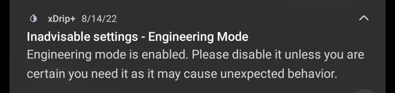

Other Misc. Options
More options are available in this menu.
If they are hidden here it's probably because you won't need to change them every day, or you should leave them as they are unless instructed differently.

Settings
Less Common settings
Other Misc. options
Run collector in foreground⌁
Mandatory to keep xDrip+ from being put to sleep by Android.
This will force displaying a graph in the notifications area, you shouldn't disable it.
Run collector in foreground 
Shows a persistent notification graph, visible on lock screen and prevents Android killing the service.

Engineering mode⌁
Enables feature that are potentially dangerous or untested. You do not need it to be enabled for restarting a G5 or an old G6 transmitter (new ones called Firefly can't be restarted). You actually don't need this to be enabled.
Engineering mode 
Allows changing the most unsafe settings which could break everything!
To enable engineering mode enter or speak the enable engineering mode treatment.
You will be reminded monthly engineering mode is on. Make sure you really need it, else keep it disabled.

Battery Optimization Prompt⌁
Should be left disabled. xDrip+ needs whitelisting and shouldn't be subject to optimization.
Battery Optimization prompt
On Android 6+ ensure battery optimization is switched off (recommended)
Samsung Workarounds⌁
Renamed to Wake Workarounds as other devices are not compliant.
Wake Workarounds⌁
Fixed a non compliance in respect to some Android of devices, now default for Samsung, Xiaomi, OnePlus, Oppo and Huawei.
Should be kept enabled.
Wake workarounds
Use workarounds to avoid non-standard Android behavior of some handsets. Without this, collectors usually fail to get data.
Use Excessive Wakelocks is not required. They are additional "wake-up" messages sent by xDrip+ to your Android device to prevent it to go in sleep mode.
Use Excessive Wakelocks
Older gratuitous wakelocks which can drain extra battery but might be needed for Nightwatch or Android Wear.
Display Predictive Values (old method) is deprecated. Use Predictive Simulation.
Display Predictive Values (old method)
Old method - Not recommended!
Proper Ongoing is mandatory for devices with Android 8 and above.
Proper Ongoing
Use proper ongoing notification. Disabling this causes collector problems on Android 8+
Out of Process Algorithm⌁
Out Of Process Algorithm enables the integration of an external plugin to give vendor like BG values for Libre sensors or provide decoding of the Libre 2 EU sensor information.
If the external app doesn't exist on your phone or doesn't provide the information, xDrip+ will not display BG.
Warning
This option should only be enabled if using an Out Of Process algorithm version 1 (OOP1).
It must be disabled for OOP2.
Out of process Libre algorithm
Use an out of process (OOP) Libre algorithm. (Bridge/NFC/LibreAlarm)
OOP2⌁
OOP2 is mandatory to handle data from Libre 14 days US, Libre 2/2+ EU.
OOP2 algorithm calibration
Apply xDrip calibration method on OOP2 data
You can use OOP2 in different ways:
- No calibration generates vendor like values (native mode) without the need of calibrating. It doesn't mean that results are not calibrated (raw) but a vendor-like algorithm is applied (like the Libre 1 reader). Recommended to start with.
- Calibrate based on raw uses the sensor raw data (no temperature correction) like Libre 1. You will use the xDrip+ calibration algorithm.
- Calibrate based on glucose allows you to apply xDrip+ calibration to native values. Raw data are transformed using the vendor-like algorithm, then fed to the xDrip+ calibration algorithm.
OOP2 algorithm calibration
No calibration ●
Calibrate based on raw ○
Calibrate based on glucose ○
Smooth Libre data averages on 5 measurement. This will also delay readings.
If this option doesn't bring the improvement expected, also try Smooth Sensor Noise.
Smooth Libre data
Use average of 5 points to get smoother Libre data
Retrieve Libre History is required for BluCon bridges. Other bridges perform backfilling automatically.
Retrieve Libre History
Retrieve missing history from Blucon device when reconnecting to the sensor.
Libre one minute display is still under development. xDrip+ displays BG values every 5 minutes.
Libre one minute
This option is not available at all.
NOT FOR PRODUCTION USE